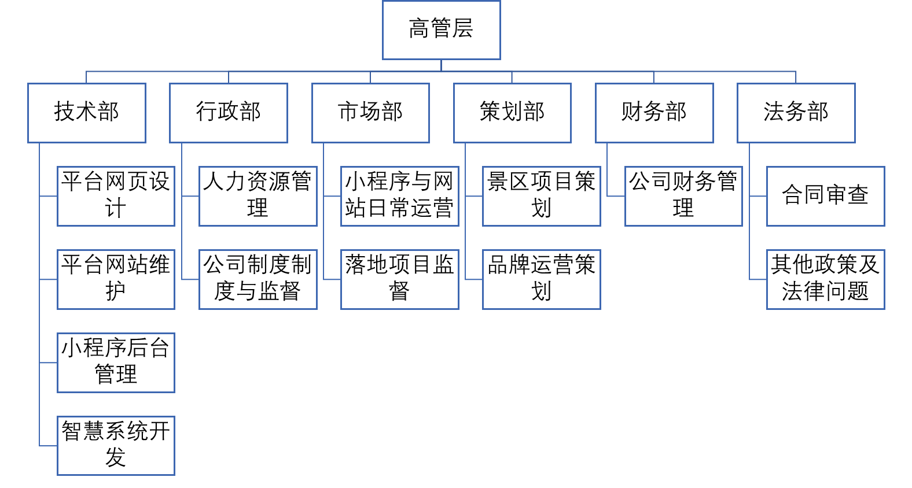
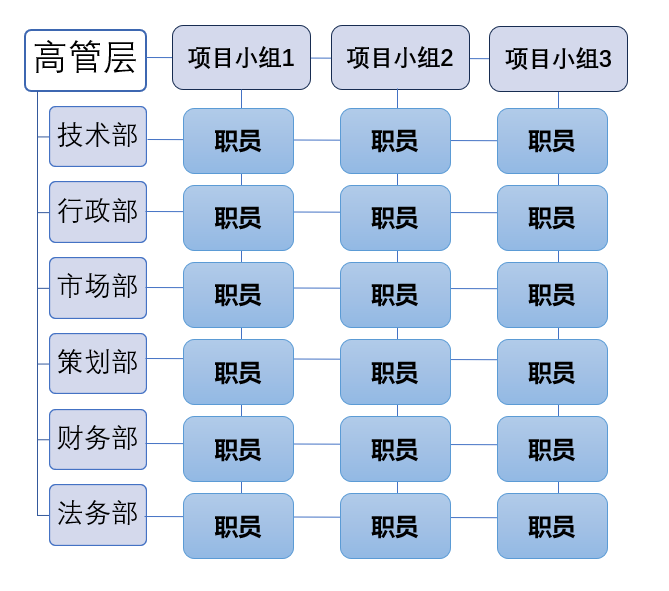

公司架构：


公司成立初期以扁平化的管理模式，强调系统性。尽量减少管理层次，形成一条最短的指挥链，以减少公司信息的不对称和低效传达问题。在公司规模扩大后，采用矩阵式组织结构，通过加强不同部门之间的协作和信息交流，促进公司项目的实现。
一、公司激励方法 （1）薪资激励 公司资薪设置以对外富有竞争力、对内不失公平性为薪酬激励体系原则。不 同职务根据市场水平制定一定资薪以保障对外竞争力，对相同的职务设置不同的 岗位等级，根据岗位职务、岗位等级高低设置薪资水准，实现员工贡献输出与资 薪收入对等。根据公司发展情况，进一步为全体员工制定完善的可变薪酬计划， 提高职工薪酬。 （2）奖金激励 公司根据员工出勤率、工作效率、个人业绩及部门、公司的集体绩效对各员 工进行业务综合核算，周期性发放奖金。
二、企业文化激励 公司定期组织员工进行团体建设活动，包括集体运动会、主题沙龙聚会、年 会等提升员工企业归属感，促进公司人文环境和谐发展。
三、精神激励 公司根据发展情况制定相应目标，按时间、内容进行划分落实到各部门，各 部门再按实际分配落实到员工个人。确定员工业绩目标，将员工业绩情况计入评 价考核体系，以促进员工个人价值的实现，提高员工自我实现的满足。公司根据 评价考核体系，定期评选优秀员工，对优秀员工颁发各项荣誉称号并给予晋升机 会，提高公司内部竞争力，促进公司稳步协调发展。
四、股权激励 根据公司发展实际不同股权激励模式，实现员工和公司之间的利益的高度一 致，提高员工忠诚度。